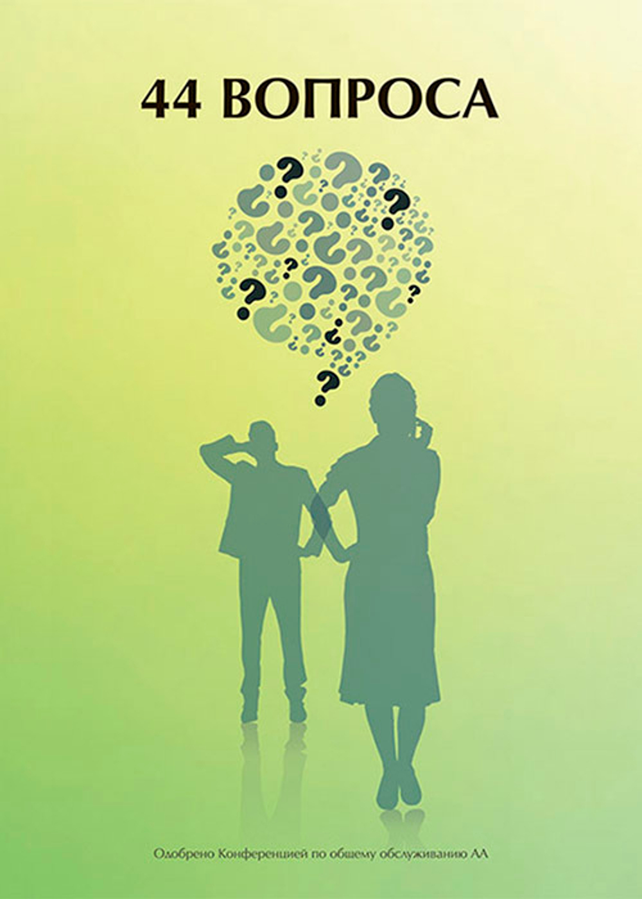

Большая Книга «Анонимные Алкоголики»
Большая книга с историями. В ней описан опыт первых членов Содружества и принципы, которые помогают алкоголикам оставаться трезвыми.
Открыть PDFКупить печатную литературу АА на русском языке в России можно на официальном сайте АА России. За помощью с покупкой литературы за рубежом, можно обратиться к членам нашей группы.
Большая книга с историями. В ней описан опыт первых членов Содружества и принципы, которые помогают алкоголикам оставаться трезвыми.
Открыть PDFКнига подробно раскрывает Двенадцать Шагов как путь личного выздоровления и Двенадцать Традиций как основу единства и работы групп АА.
Открыть PDFПрактическая книга с методами сохранения трезвости, которые используют члены АА: как не пить первую рюмку, справляться с тягой и оставаться трезвым сегодня.
Открыть PDF
Короткая брошюра с простыми ответами на частые вопросы об Анонимных Алкоголиках, собраниях, членстве, анонимности и том, как АА помогает алкоголикам оставаться трезвыми.
Открыть PDFКраткое руководство о наставничестве в АА: как выбрать наставника, как строится помощь новичку и какую роль спонсорство играет в работе по Программе.
Открыть PDF